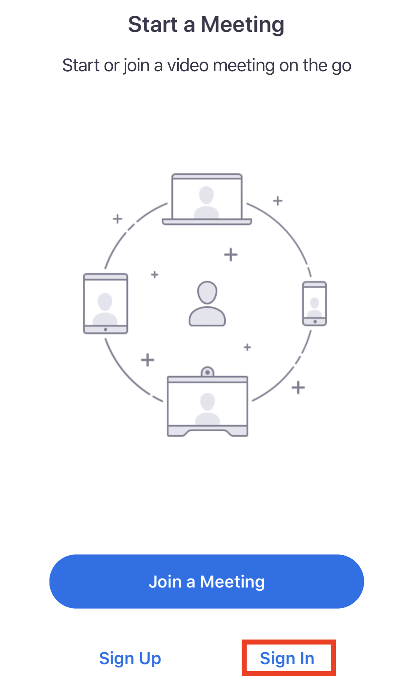
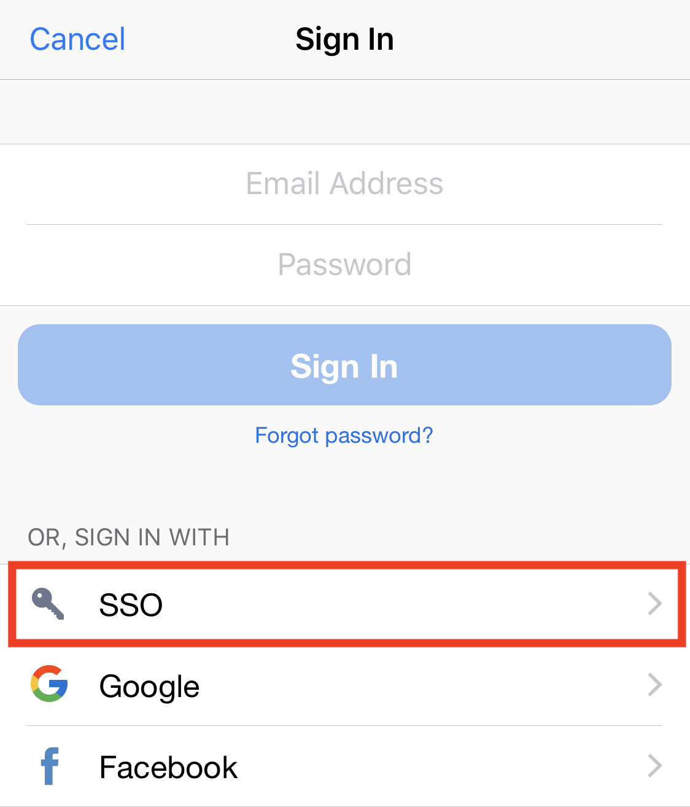
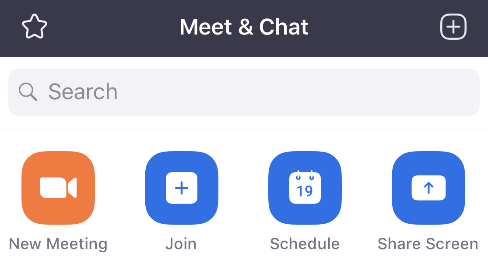

Logging in from the Zoom mobile app allows you to host a meeting or webinar on the go
and schedule a meeting directly in the app.
Login to your UMN Zoom account from the mobile app with the following steps:
-
Download the Zoom Cloud Meetings Mobile App from either the Google Play Store on Android or the
App Store on iOS
-
Launch the app and tap Sign In on the start screen

-
Tap SSO on the Sign In window

-
Enter the umn domain in the text field when prompted
If you are already signed in through your browser on this device, it will
automatically log you in.
If you are not already logged in, enter the Internet ID and
password you use for other University of Minnesota logins and tap
Sign In. Authenticate with Duo if prompted.
-
Tap Open to be taken back to the Zoom app if prompted
You will now be signed into the Zoom app. From here, you can start a new
instant meeting, join a meeting, schedule a meeting, or share your device
screen.

You can also use the gear icon to access the Zoom mobile app
settings.